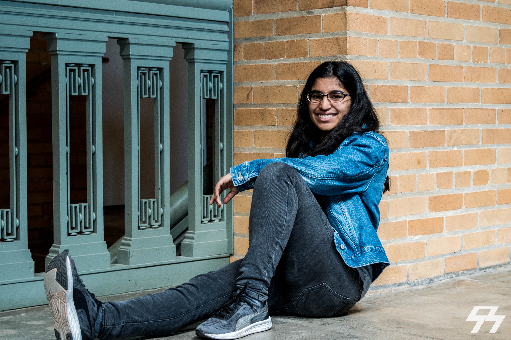
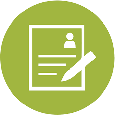

About Me

Hello! My name is Neha Kunjal, and I'm from San Jose. I am a junior studying computer science in UC Berkeley. I am still figuring out what I am going to do in the field, but I am currently fascinated with machine learning, system architecture and algorithmic design and optimization.
I fell in love with computer science because of the huge impact that technology has on our everyday lives. For this reason, I love taking on technological projects that help others achieve their own goals, as well as teach people how to wield the power of programming.
In my free time, I like to explore new places, trying new foods, climbings trees, reading, and listening to music.
Thanks for visiting my site! :)
